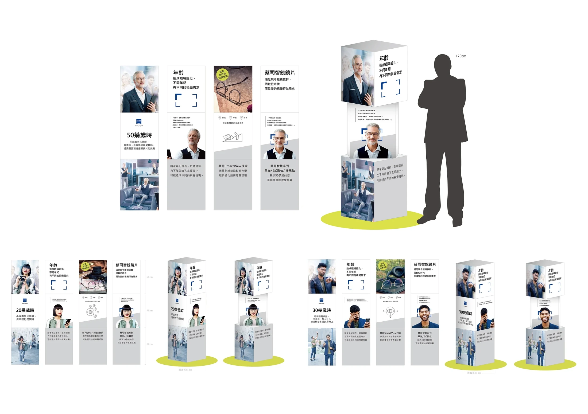
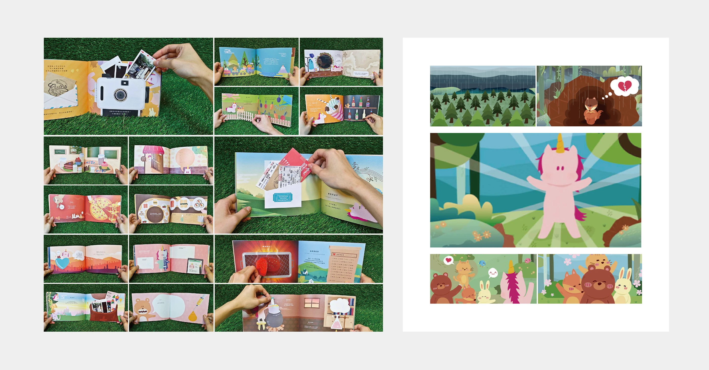
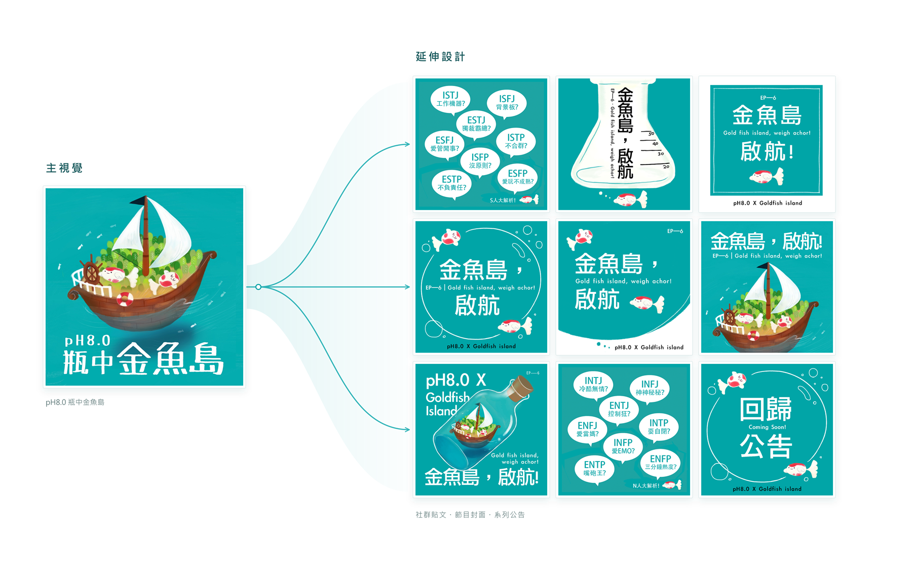
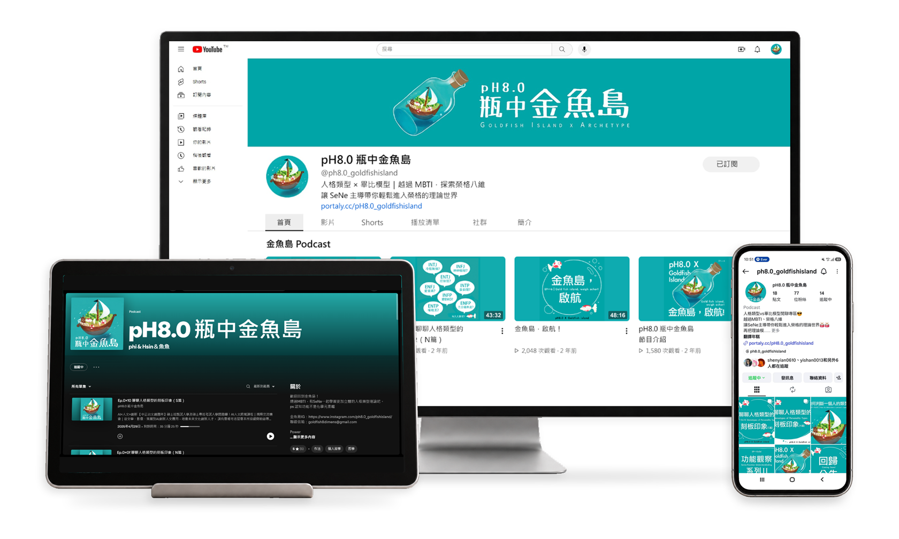
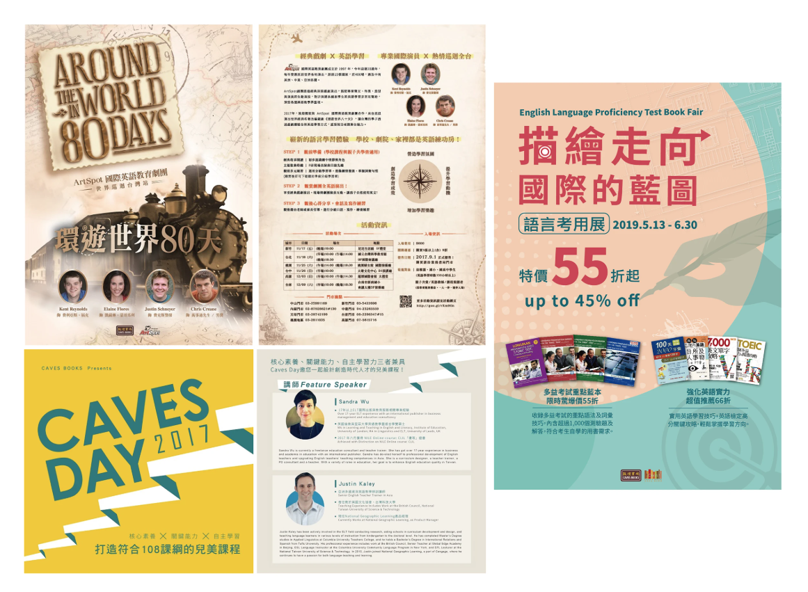
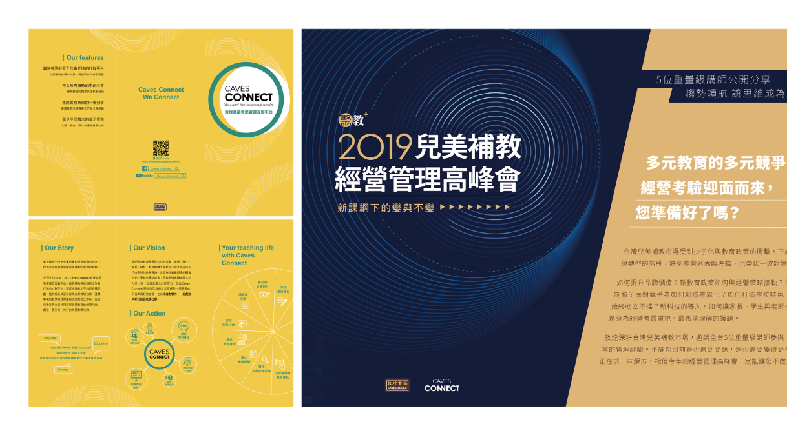

ANN / PORTFOLIO2026
A STUDY IN CLARITY
讓想法，逐漸成形。
拖曳旋轉 · 點一下，讓想法繼續
PRODUCT · UX · LEARNING EXPERIENCE
探索作品
我是一名具備多元設計專業背景的 UI/UX 設計師。
累積 6 年設計實務經驗。在執行專案的過程中，我發現自己不只關注視覺呈現，更在意使用者的需求與想法，以及如何讓資訊傳達得更清楚、有效。我習慣先蒐集資訊、理解問題，再轉化為可執行的方案，也因此希望朝 UI/UX 與產品設計領域發展，解決實際的使用者問題。
學歷EDUCATION
景文科技大學
文化產業創新・碩士
景文科技大學
視覺傳達・學士
北市商
廣告設計科
工作經歷EXPERIENCE
UE Artist ／ Pixoul
互動展示、Figma 流程、團隊知識。
網站視覺設計 ／ 外包接案
網站視覺、資訊層級與設計提案。
平面插畫設計 ／ 富麗生活・徐匯廣場
活動主視覺、插畫與多媒介延伸。
視覺陳列設計 ／ 奧亞整合行銷網
展示規劃、打樣與製作協作。
專案參與COLLABORATIONS
敦煌書局
月刊視覺設計
設計品格書籍改版
內容素材示範
樺霖展示設計
百貨聖誕節、世貿電玩展協助設計
築點設計
展覽櫥窗協助設計
遊學堂與台北街角遇見設計
社區記憶設計活動
校內設計週形象設計
主視覺及空間規劃
技能與軟體
01
UI/UX
- 資訊架構設計
- 使用者流程設計
- 需求分析與問題拆解
- Wireframing
- Prototyping
- Design System
- Visual Composition
- 互動邏輯與操作體驗規劃
02
UE Artist
- 3D 場景建置與整合
- 即時渲染與燈光設計
- 材質與視覺效果
- 動畫製作與鏡頭編排
- 互動展示與功能實作
- 虛擬空間與展示流程規劃
03
Design
- 網頁視覺設計
- 品牌視覺設計
- 活動主視覺設計
- 插畫與角色設計
- 排版與字體設計
- 色彩與視覺構成
- 印刷與輸出設計
把想法，做成體驗。
讓複雜，有跡可循。
過往作品，不同的嘗試。
 展開其他作品收合其他作品15 SELECTED WORKS
展開其他作品收合其他作品15 SELECTED WORKS









ONE LAST THING.
感謝您的時間，在離開之前留下一點觀察，會對我有很大的幫助。
這份作品集仍在持續迭代。如果你願意，花 20 秒告訴我你的感受。